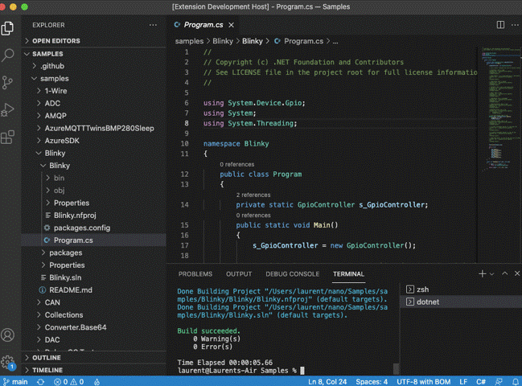
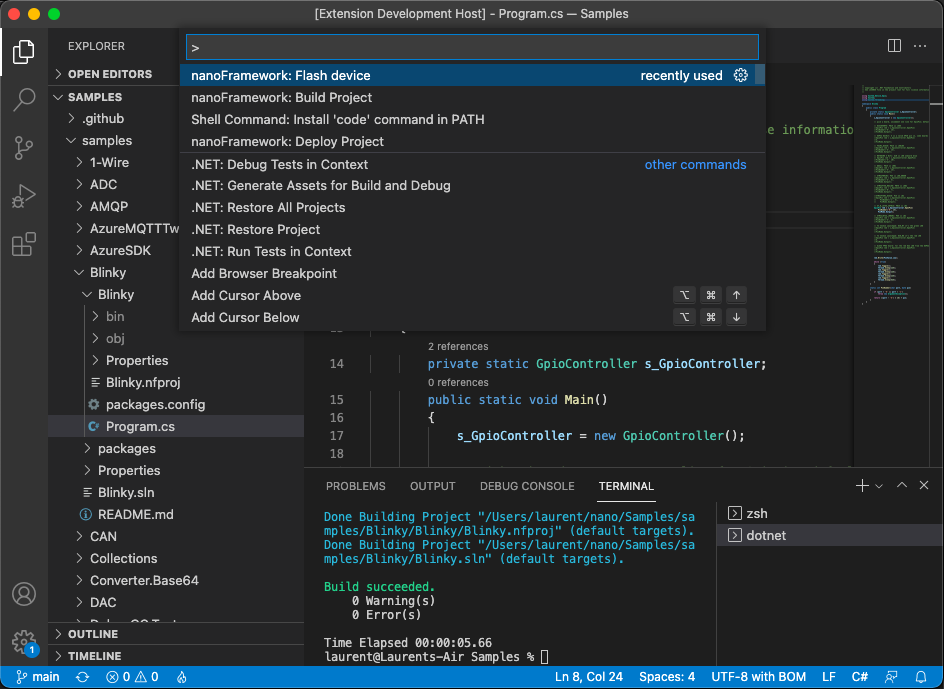
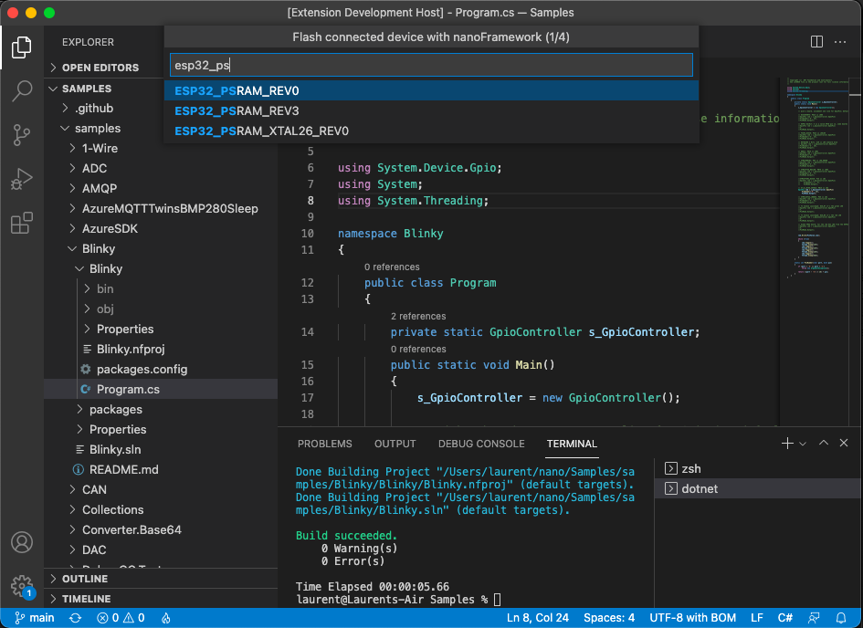
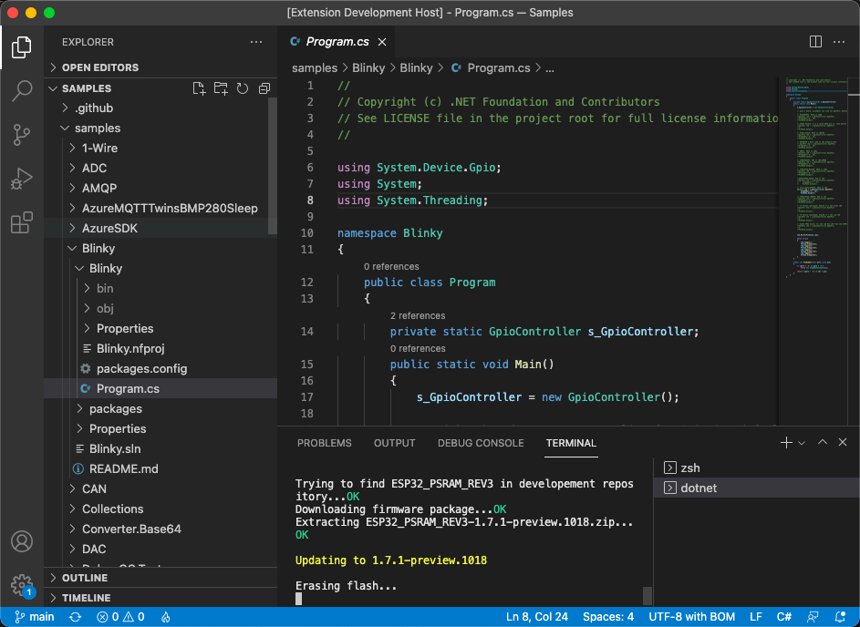
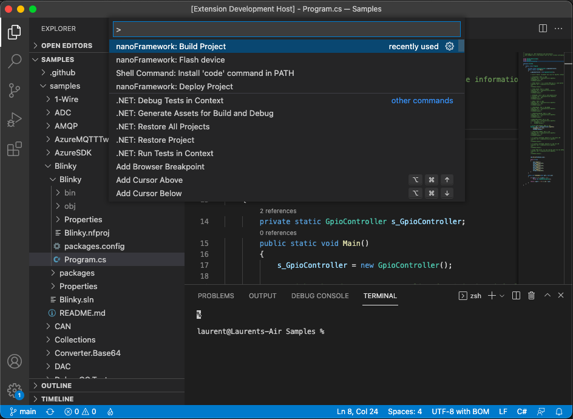
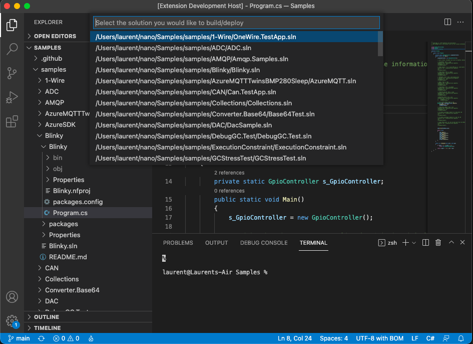
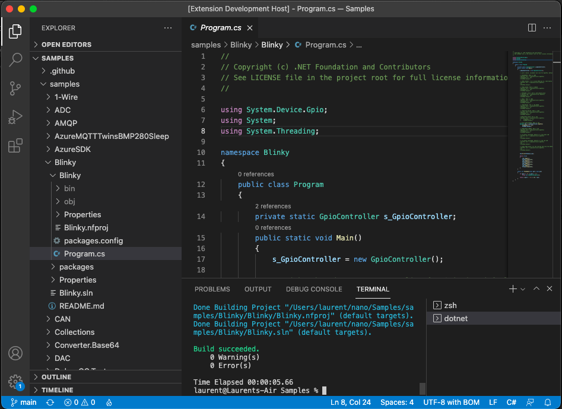
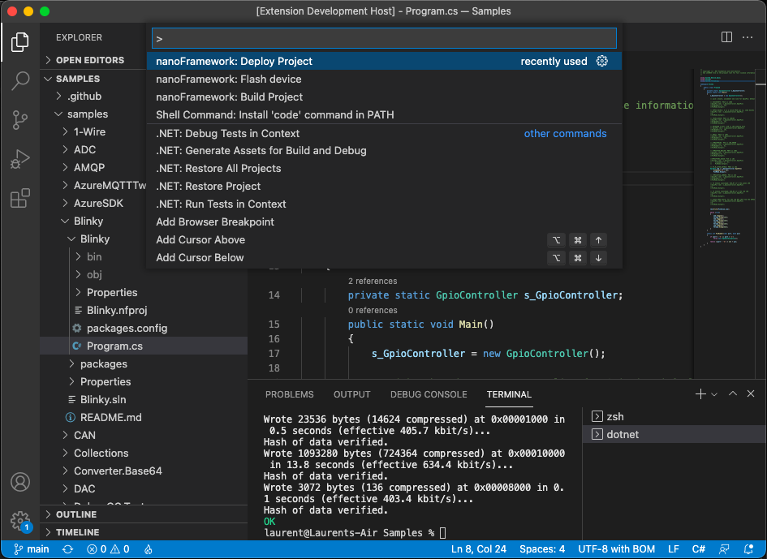
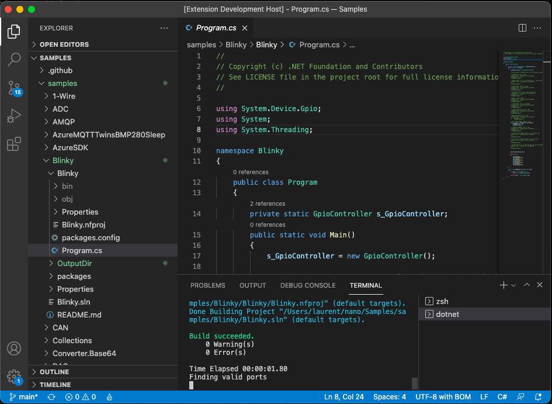

Getting Started Guide for managed code (C#) with VS Code
.NET nanoFramework enables the writing of managed code applications for embedded devices. Doesn't matter if you are a seasoned .NET developer or if you've just arrived here and want to give it a try.
This getting started guide will walk you through the setup of your development machine using Visual Studio Code (VS Code), and get you coding a nice "Hello World" in no time.
If you are looking for the Visual Studio guide instead, check this page.
Not sure where to buy a device? Check this page out!
Installing and configuring VS Code
The first part is to get VS Code and the .NET nanoFramework extension installed.

Install .NET 10.0 SDK or Runtime (or later)
Install Visual Studio Code
Install the nanoFramework extension for VS Code
- Open VS Code.
- Go to the Extensions view (
Ctrl+Shift+X). - Search for nanoFramework.
- Install .NET nanoFramework VS Code Extension.
Install nano Firmware Flasher (nanoff)
dotnet tool install -g nanoffInstall build prerequisites
- On Windows: install Visual Studio Build Tools with ".NET desktop build tools" workload.
- On Linux/macOS: install mono-complete with
msbuild, and NuGet CLI.
Uploading the firmware to the board
The second part is to load the .NET nanoFramework image in the board flash.
Option A: Use VS Code extension command (recommended)
Use the Command Palette (Ctrl+Shift+P) and select nanoFramework: Flash device.

Then follow the prompts to select target, version and connection details.

You can follow the operation in the terminal/output while the firmware is being flashed.

Option B: Use nanoff directly from the command line
You need to know the serial port attached to your device. You can list the ports with nanoff --listports. This command like all the others are working on Windows, MacOS and Linux on all the architectures.
IMPORTANT: you may have to install drivers. Refer to the vendor website for Linux, MacOS and Windows, or use Windows Update to install the latest version of the drivers.
To update the firmware of an ESP32 target connected to COM31, to the latest available version.
nanoff --platform esp32 --serialport COM31 --updateTo update the firmware of a ST board connected through JTAG (ST-Link) to the latest available version.
nanoff --target ST_NUCLEO144_F746ZG --updateTo update the firmware of a ST board connected through DFU (like the NETDUINO3) you first need to put the board in DFU mode.
nanoff --target NETDUINO3_WIFI --update --dfuTo list the available serial ports:
nanoff --listports
Coding a 'Hello World' application
Now you have everything that you need to start coding your first application. Let's go for a good old 'Hello World' in micro-controller mode, which is blinking a LED.
Create or open a .NET nanoFramework solution/project in VS Code.
Grab the
Blinkycode from the .NET nanoFramework samples repository. Make sure that the correct GPIO pin is being used for your board.Because GPIO is being used we need to pull that class library and add a reference to it in the project. Add package
nanoFramework.System.Device.Gpio.Build the project using the Command Palette and nanoFramework: Build Project.

If you have multiple solutions/projects in the folder, select the one to build.

Build output is shown in the terminal.

- Deploy the project with nanoFramework: Deploy Project.

If you have multiple projects, choose the one to deploy and follow the prompts.

Debugging your application in VS Code
The VS Code extension provides source-level debugging support for .NET nanoFramework applications.
Quick start
Make sure your target is connected and running .NET nanoFramework firmware.
Build the project using nanoFramework: Build Project.
Press
F5(or select Run > Start Debugging).If prompted, select the device to debug.
The debugger deploys your assemblies and starts the session.
Debug configuration (launch.json)
When pressing F5 the first time, you will be prompt to create a launch profile. You can create before .vscode/launch.json with launch and attach configurations. You can have as many as you want and select the one that you need.
{
"version": "0.2.0",
"configurations": [
{
"name": "nanoFramework: Launch and Debug",
"type": "nanoframework",
"request": "launch",
"program": "${workspaceFolder}/${workspaceFolderBasename}/bin/Debug",
"device": "",
"stopOnEntry": true,
"deployAssemblies": true,
"verbosity": "none"
},
{
"name": "nanoFramework: Attach to Device",
"type": "nanoframework",
"request": "attach",
"device": "",
"program": "${workspaceFolder}/${workspaceFolderBasename}/bin/Debug"
}
]
}
[!Note]: you can use an absolute path as well rather than the path with the workspace and project.
If device is left empty, the extension can auto-select the device, or prompt you if multiple targets are connected.
You can also manually select the debug device with nanoFramework: Select Debug Device.
Debugging tips
- Set breakpoints in the gutter or by pressing
F9. - Use stepping commands have limited support and may not work properly:
F10(Step Over),F11(Step Into),Shift+F11(Step Out). - Use the Variables, Watch, and Call Stack panes while paused.
- Use the Debug Console for
Debug.WriteLine()output.
Troubleshooting debug sessions
Device not found
- Check cable/driver and confirm the target is running nanoFramework firmware.
- Try reconnecting the board and selecting the device again.
Breakpoints not hit
- Rebuild with nanoFramework: Build Project.
- Make sure
deployAssembliesistrue. - Check that
.pdbxand.pdbfiles are present in the output folder.
Debug session won't start
- Check Debug Console messages.
- Ensure no other tool is using the COM port.
- Confirm the required .NET runtime is installed.
Trouble shooting
See this guide for solutions to some common problems: Getting Started Trouble Shooting Guide
If needed, also check Getting Started Trouble Shooting Device Connection Guide.
Wrapping up
Congratulations! That's your first .NET nanoFramework C# application executing right there on the target board with VS Code!.
You have gone through the steps required to install VS Code, the .NET nanoFramework extension and flash firmware into your device.
You've also learned how to build, deploy and debug a simple C# application from VS Code.
Check out other guides and tutorials. You may also want to join our Discord channel, where you'll find a supportive community to discuss your ideas and help you in case you get stuck on something.
And now, to know more about GPIO, ADC, DAC, I2C, SPI, UART/Serial Ports, see our beginner series guiding you with theory and practice.